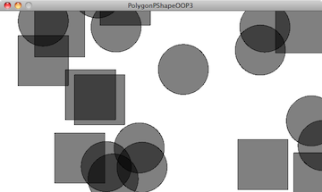
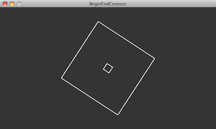

This tutorial is for Processing version 2.0+. If you see any errors or have comments, please let us know.
The source code contained in this tutorial can be found by selecting File > Examples in the Processing IDE. Then select Topics > Create Shapes.
What is a PShape?
One of the very first things you learn when programming with Processing is how to draw "primitive" shapes to the screen: rectangles, ellipses, lines, triangles, and more.
rect(x,y,w,h); ellipse(x,y,w,h); line(x1,y1,x2,y2); triangle(x1,y1,x2,y2,x3,y3);
A more advanced drawing option is to use beginShape() and endShape() to specify the vertices of a custom polygon:
beginShape(); vertex(x1,y1); vertex(x2,y2); vertex(x3,y3); vertex(x4,y4); // etc; endShape();
And you can build more complex shapes by grouping a set of drawing functions together, even perhaps organizing them into a class.
class MyWackyShape {
// Some variables
// A constructor
// Some functions
// Display the shape!
void display() {
rect(x,y,w,h);
ellipse(x,y,w,h);
beginShape();
vertex(x1,y1);
vertex(x2,y2);
vertex(x3,y3);
vertex(x4,y4);
// etc;
endShape();
}
}
This is all well and good and will get you pretty far. There's very little you can't draw just knowing the above. However, there is another step. A step that can, in some cases, improve the speed of your rendering as well as offer a more advanced organizational model for your code—PShape.
PShape is a datatype for storing shapes. These can be shapes that you build out of custom geometry or shapes that you load from an external file, such as an SVG.
Primitive PShapes
Let's begin with one of the simplest cases for use of a PShape. Here's a simple Processing draw() method that draws an rectangle following the mouse.

void draw() {
background(51);
stroke(255);
fill(127);
rect(mouseX,mouseY,100,50);
}
Pretty basic stuff. If this was all the code we had, there's not necessarily a good reason for using a PShape instead, but we're going to push ahead and make a PShape rectangle anyway as a demonstration. Our goal here is to have a variable that stores the color and dimensions of that variable, allowing our draw function to look like this.
void draw() {
background(51);
shape(rectangle);
}
And what is this "rectangle"? It's a PShape.
PShape rectangle;
To initialize a PShape, use the createShape() method. The first argument for createShape() is a constant, and this constant specifies the type of PShape you intend to make. As we'll see throughout this tutorial there are a number of options: ELLIPSE, RECT, ARC, TRIANGLE, SPHERE, BOX, LINE, GROUP, and more. Here we are making a primitive shape, a rectangle, so we use the constant "RECT." The arguments that follow are the (x,y) location for the shape as well as its dimensions (width,height). So now our setup() should look like:
PShape rectangle;
void setup() {
rectangle = createShape(RECT,mouseX,mouseY,100,50);
}
There's a big problem though. Yes, we want the rectangle to appear at the mouse location, but when a sketch first begins mouseX and mouseY are set to zero. mouseX and mouseY don't come to life until we are looping through draw(). It's important to remember that when using PShape, what we're really doing is configuring the geometry relative to the origin (0,0). It's generally then advantageous to then move that shape about the screen using transformations: translate(), rotate(), etc. So now we have:
PShape rectangle;
void setup() {
rectangle = createShape(RECT,0,0,100,50);
}
and if we wanted the Rectangle to be drawn from its center:
PShape rectangle;
void setup() {
rectangle = createShape(RECT,-50,-25,100,50);
}
We can then move it according to the mouse with translate.
void draw() {
background(51);
translate(mouseX,mouseY);
shape(rectangle);
}
One of the nice things about the PShape object is that it can also store color information in addition to geometry. Once a shape has been created in order to alter its fill or stroke, use the methods setFill(), setStroke(), setStrokeWeight(), etc.
void setup() {
rectangle = createShape(RECT,-50,-25,100,50);
rectangle.setStroke(color(255));
rectangle.setStrokeWeight(4);
rectangle.setFill(color(127);
}
These methods can be called during draw() as well if you want to change the color of the shape dynamically.

void draw() {
background(51);
translate(mouseX, mouseY);
rectangle.setFill(color(map(mouseX, 0, width, 0, 255));
shape(rectangle);
}
It should be noted that unlike with fill() and stroke() you must pass a full color as an argument. i.e. instead of saying "setFill(255,0,0)" for a red fill, you'll need to say "setFill(color(255,0,0))". In addition, setFill() and setStroke() can take a boolean argument (e.g. setFill(false)) to turn the fill or stroke on or off for a given vertex as well as an integer (e.g. setFill(i,color(255,0,0))) to set the fill or stroke for a specific vertex.
See Example "PrimitivePShape" (under File > Examples > Topics > Create Shapes) for an example that demonstrates all of the above code.
Custom PShapes
PShapes also can be configured with custom vertices. You've probably done this before, without PShape, just using beginShape() and endShape(). For example, let's say you wanted to draw a star in Processing. You might have some code as follows:

void draw() {
background(51);
translate(mouseX, mouseY);
fill(102);
stroke(255);
strokeWeight(2);
beginShape();
vertex(0, -50);
vertex(14, -20);
vertex(47, -15);
vertex(23, 7);
vertex(29, 40);
vertex(0, 25);
vertex(-29, 40);
vertex(-23, 7);
vertex(-47, -15);
vertex(-14, -20);
endShape(CLOSE);
}
Here, just as in the previous example, our goal will be to draw the shape itself as an object in draw().
void draw() {
background(51);
translate(mouseX, mouseY);
shape(star);
}
To make a PShape with custom vertices, you must first call createShape() to make the shape object and then call beginShape() and endShape() on that object
PShape star;
void setup() {
star = createShape(); // First create the shape
star.beginShape(); // now call beginShape();
// All the vertex information goes here.
star.endShape(CLOSE); // now call endShape(CLOSE);
}
Then all the vertices (and colors) can be specified by calling the functions on the new PShape object "star." Note that setFill() and setStroke() are not required here, only if you choose to alter the colors after the shape has been initially created.
void setup() {
// First create the shape
star = createShape();
star.beginShape();
// You can set fill and stroke
star.fill(102);
star.stroke(255);
star.strokeWeight(2);
// Here, we are hardcoding a series of vertices
star.vertex(0, -50);
star.vertex(14, -20);
star.vertex(47, -15);
star.vertex(23, 7);
star.vertex(29, 40);
star.vertex(0, 25);
star.vertex(-29, 40);
star.vertex(-23, 7);
star.vertex(-47, -15);
star.vertex(-14, -20);
star.endShape(CLOSE);
}
See Example "PolygonPShape" (under File > Examples > Topics > Create Shapes) for an example that demonstrates all of the above code.
Many PShapes
As we mentioned earlier, one reason to use PShape is just to help you organize your geometry. However, there's another reason. Let's assume for a moment that you have a Star class, with a display() function that looks like so:
void display() {
pushMatrix();
translate(x, y);
fill(102);
stroke(255);
strokeWeight(2);
beginShape();
vertex(0, -50);
vertex(14, -20);
vertex(47, -15);
vertex(23, 7);
vertex(29, 40);
vertex(0, 25);
vertex(-29, 40);
vertex(-23, 7);
vertex(-47, -15);
vertex(-14, -20);
endShape(CLOSE);
popMatrix();
}
and in draw(), you are iterating through an array of Star objects, displaying each one.

void draw() {
background(51);
for (int i = 0; i < stars.length; i++) {
stars[i].display();
}
}
Try to draw around 500 stars and your sketch may run rather slowly, about 10 FPS. This is because this style of drawing, often referred to as "immediate" mode, requires the renderer to compute the geometry each time through draw for each and every star. But is this necessary? After all, it's the same star over and over and over again. Using a PShape allows Processing to essentially "memorize" the geometry of that star. Drawing the memorized geometry (called a "Vertex Buffer Object" in lower-level OpenGL syntax) is called "retained" mode and is a great deal faster. Those 500 stars render easily at 60 FPS using a PShape instead. This can be achieved by including a PShape variable as part of the Star class.
class Star {
PShape s;
float x, y;
That PShape then needs to be initialized in the constructor. This can be done directly, right there in the class.
Star() {
// First create the shape
s = createShape();
star.beginShape();
// You can set fill and stroke
star.fill(102);
star.stroke(255);
star.strokeWeight(2);
// Here, we are hardcoding a series of vertices
star.vertex(0, -50);
star.vertex(14, -20);
star.vertex(47, -15);
star.vertex(23, 7);
star.vertex(29, 40);
star.vertex(0, 25);
star.vertex(-29, 40);
star.vertex(-23, 7);
star.vertex(-47, -15);
star.vertex(-14, -20);
star.endShape(CLOSE);
}
This method makes sense if each object itself has its own geometry, generated via an algorithm. However, if each object is displaying the identical PShape, it likely makes more sense to pass in a reference to a PShape in the constructor itself. Let's take a look at how this might work. Let's say we create a generic class called "Polygon" which has a reference to a PShape (which is draws in a display method).
class Polygon {
PShape s;
void display() {
shape(s);
}
}
TIn the previous example, the shape was created right there in the object's constructor. Here we are going to demonstrate a different way to write the constructor where the shape is set via an argument.
Polygon(PShape s_) {
s = s_;
}
For this to work, however, a PShape must be passed into when the object is created. Here is how this would look in the main tab with setup():
Polygon poly; // An object of type Polygon
void setup() {
PShape star = createShape(); // First we make the PShape
star.beginShape();
star.noStroke();
star.fill(0, 127);
star.vertex(0, -50);
star.vertex(14, -20);
star.vertex(47, -15);
star.vertex(23, 7);
star.vertex(29, 40);
star.vertex(0, 25);
star.vertex(-29, 40);
star.vertex(-23, 7);
star.vertex(-47, -15);
star.vertex(-14, -20);
star.endShape(CLOSE);
poly = new Polygon(star); // Then we make the Polygon object by passing in the reference to the PShape
}
This is a very flexible approach. For example if you had an array of PShape objects, you could create new Polygon objects each one with a random PShape. Here is a simple implementation.

ArrayListpolygons; PShape[] shapes = new PShape[2]; // An array of PShapes void setup() { size(640, 360, P2D); smooth(); shapes[0] = createShape(ELLIPSE,0,0,100,100); // Two PShapes shapes[1] = createShape(RECT,0,0,100,100); polygons = new ArrayList (); for (int i = 0; i < 25; i++) { int selection = int(random(shapes.length)); // Pick a random index Polygon p = new Polygon(shapes[selection]); // Use corresponding PShape to create Polygon polygons.add(p); } }
For the full examples, take a look at "PolygonPShapeOOP1", "PolygonPShapeOOP2", and "PolygonPShapeOOP3" (Under File > Examples > Topics > Create Shapes). It should also be noted that the rendering speed optimization of retained mode is only relevant to P2D and P3D drawing modes, as it requires hardware acceleration.
More Custom PShapes
PShapes support all the same types of shapes you can draw in immediate mode. These include: POINTS, LINES, TRIANGLES, TRIANGLE_FAN, TRIANGLE_STRIP, QUADS, and QUAD_STRIP. For example, if you want to create a quad strip, you would say:
PShape s = createShape(QUAD_STRIP);
If no mode is specified, the shape can be any irregular polygon as we saw in the previous star example. A PShape can also be a path by not closing the shape. Here is an example of a path that follows a sine wave as a PShape object.

PShape path = createShape();
path.beginShape();
float x = 0;
// Calculate the path as a sine wave
for (float a = 0; a < TWO_PI; a += 0.1) {
path.vertex(x,sin(a)*100);
x+= 5;
}
// Don't "CLOSE" a shape if you want it to be a path
path.endShape();
See Example "PathPShape" for the full implementation.
PShapes also include the methods beginContour() and endContour(). These methods allow you to cut a shape out of another and make shapes with holes in them. Think of drawing the outline of a letter, like P (for Processing). The outline of the P can be drawn as a series of vertices, but to get the counter shape knocked out of the middle of the P, you need begin/endContour and draw the path of the interior. Here's a simple example that draws an interior square inside of an exterior one.

// Make a shape PShape s = createShape(); s.beginShape(); // Exterior part of shape s.beginContour(); s.vertex(-100,-100); s.vertex(100,-100); s.vertex(100,100); s.vertex(-100,100); s.vertex(-100,-100); s.endContour(); // Interior part of shape s.beginContour(); s.vertex(-10,-10); s.vertex(10,-10); s.vertex(10,10); s.vertex(-10,10); s.vertex(-10,-10); s.endContour(); // Finishing off shape s.endShape();
See Example "BeginEndContour" (under File > Examples > Topics > Create Shapes) for the full implementation.
PShape Groups
Another convenience of PShape is the ability to group shapes. For example, what if you wanted to create an alien creatures out of a set of circles, rectangles, and custom polygons. If the head were a circle and the body a rectangle, you might think you need:
PShape head = createShape(ELLIPSE,0,0,50,50); PShape body = createShape(RECT,0,50,50,100); shape(head); shape(body);
While of course this would work, it would be a great deal more convenient if you could group the head and body into one PShape. With a PShape "GROUP", you can.

// Make the parent shape PShape alien = createShape(GROUP); // Make two shapes PShape head = createShape(ELLIPSE, 0, 0, 50, 50); PShape body = createShape(RECT, 0, 50, 50, 100); // Add the two "child" shapes to the parent group alien.addChild(head); alien.addChild(body); // Draw the group translate(width/2, height/2); shape(alien);
For a full example that demonstrates a PShape that groups together a primitive shape, custom polygon, and path, see "GroupPShape" (under File > Examples > Topics > Create Shapes). PShape groups allow you build a sophisticated hierarchy of shapes. This in turn allows you to set the color and attributes of the child shapes by calling the corresponding method at the parent level. Similarly, by calling the transformation functions at a given level of the hierarchy, you only affect the shapes below.
Loading External Shapes
PShapes also support loading shape files, such as an SVG (for 2D shapes) or OBJ (for 3D shapes). This can be achieved with the loadShape() method.
PShape svg;
void setup() {
size(640, 360, P2D);
svg = loadShape("star.svg");
}
void draw() {
background(255);
shape(svg);
}
Manipulating the Vertices of a PShape in Real-Time
After about five minutes of working with PShape, the question inevitably arises: "What do I do if I want to wiggle all of my vertices?" PShape allows you to dynamically access and alter the vertices through the methods getVertex() and setVertex().
To iterate over the vertices of a PShape, you can loop from 0 to the total number of vertices (getVertexCount()). Assuming a PShape "s", this would look something like:
for (int i = 0; i < s.getVertexCount(); i++) {
}
The vertices can be retrieved as PVector objects with getVertexCount().
for (int i = 0; i < s.getVertexCount(); i++) {
PVector v = s.getVertex(i);
}
You could then move that vertex by manipulating the PVector and setting new values with setVertex().
for (int i = 0; i < s.getVertexCount(); i++) {
PVector v = s.getVertex(i);
v.x += random(-1,1);
v.y += random(-1,1);
s.setVertex(i,v.x,v.y);
}
For an example that wiggles a polygon's vertices using Perlin noise, see "WigglePShape" (under File > Examples > Topics > Create Shapes).
This tutorial is for Processing version 2.0+. If you see any errors or have comments, please let us know.